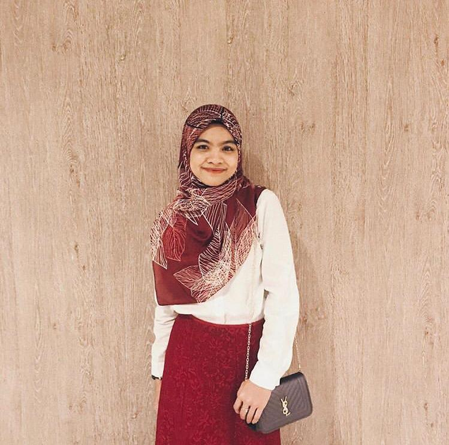

👪MY HAPPY FAMILY👪
Family is everything. For sure, I know nobody can't imagine living without family by side.
Family is very important and valuable. They should never be taken for granted.
Here are few of my family member's photos.
| MY FAMILY | NAME | PHOTO | DETAILS |
|---|---|---|---|
| Abdul Rahman bin Kamarudin | My father is from Teluk Intan, Perak. 60 years old. Worked as shop assistant in the market. He love to watch Kung Fu movie. His idol is Jackie Chan. My father love to eat fatty dishes such as sayur masak lemak, Ikan Masak Lemak Cili Api | ||
| Nur Hayati Usen | My mother is from Pattani, Thailand. She is 48 years old. Worked as sales girls at fabric store in Alor Setar town. She love to watch Thailand movie and drama. One of her favorite drama is Switch | ||
| Nur Ain bt Abdul Rahman |  | Born at hospital besar Alor Setar. She is 26 years old and not married yet. Used to study at Politeknik Tuanku Syed Sirrajudin, Perlis. Worked as sales girl in accessories phone for 9 years. | |
| Muhd Hamiz bin Abdul Rahman | Born at Hospital Sultanah Bahiyah Alor Setar. He is 17 years old and study at SMK Tengku Laksamana. He love to watch anime. His favorite food is any types of spicy food | ||
| Muhd Hafiz bin Abdul Rahman |  |
Born at Hospital Sultanah Bahiyah Alor Setar. He is 12-year-old. and study at Sekolah Kebangsaan Jalan Pegawai and also join religion classes in the evening. He also love to watch anime. Main hobby is playing game. He love to eat any types of my mom’s cooking. |